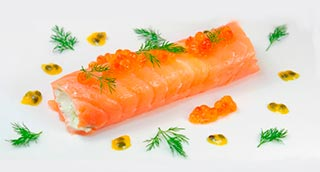

Escalope de salmón ahumado relleno de Mousse de Sardinas y Mascarpone. Aceite de tomate
Salmón, Sardinas, Mascarpone

| Salmón ahumado precortado | 200 gr. |
| Sardinas en aceite de oliva | 1 lata. |
| Mascarpone | 100 gr. |
| Cebollino | 10 gr. |
| Zumo de limón | 25 ml. |
| Tabasco | 6 gotas. |
| Pimienta de molinillo | 1 gr. |
| Aceite de oliva Arbequina | 40 ml. |
| Zumo de tomate | 40 ml. |
| Eneldo fresco | 4 rm. |
-
Garbanzos/Foie
- Escurrir las sardinas reservando el aceite. Retírar las espinas y desmenuzarlas.
- Colocar en la batidora las sardinas, el Mascarpone, el aceite reservado, el zumo de limón y las gotas de Tabasco.
- Procesar para incorporar aire en la mezcla. Poner la mezcla en un bol y rectificar de sal.
- Añadir el cebollino picado y la pimienta. Mezclar e introducir en una manga. Reservar en frío.
- Estirar sobre la mesa de trabajo un papel de film, disponer las lonchas de salmón y poner en el centro la Mousse se sardinas.
- Enrollar como si fuera un canalón presionando los bordes para cerrar firmemente. Volver a reservar en frío.
- Colocar el aceite de arbequina en un bol. Agregar sin remover el jugo de tomate. Acabado/Presentación
- Desenrollar delicadamente los rulos de salmón, cortar las puntas si queréis que se vea el interior.
- Colocar en el centro de un plato. Añadir un poco de la arbequina y el tomate.
- Decorar con una juliana de piel de limón, hojas de eneldo o huevas de trucha.